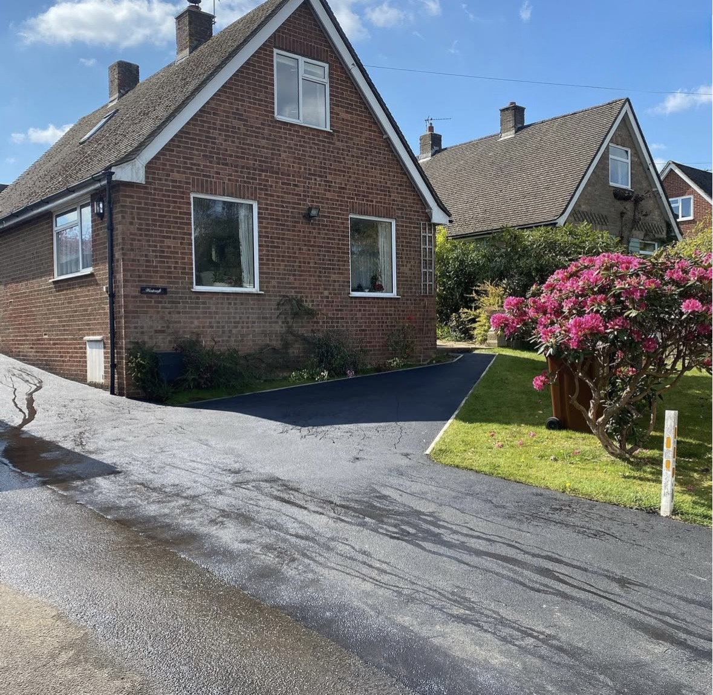
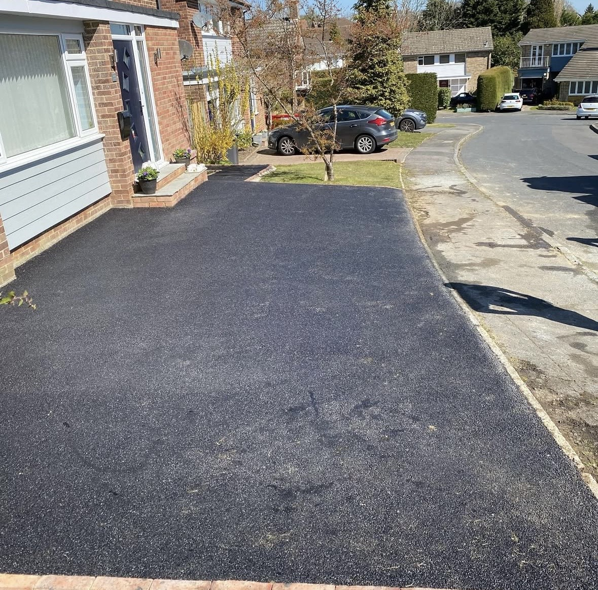
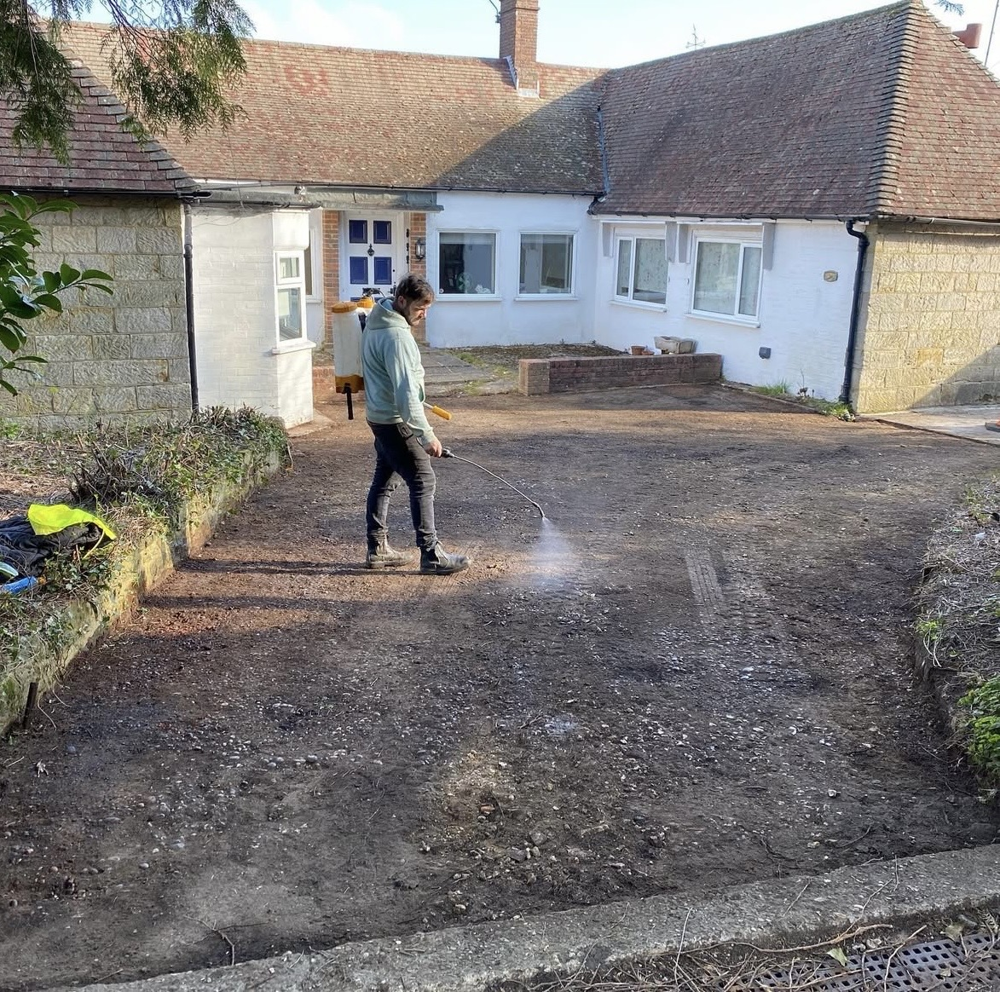
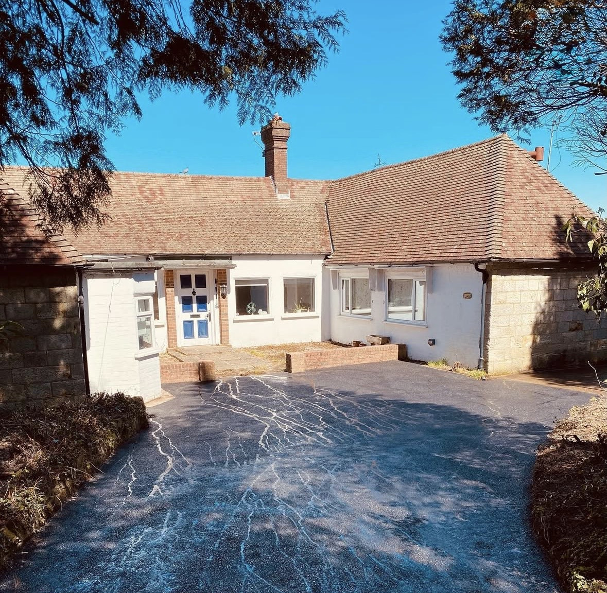
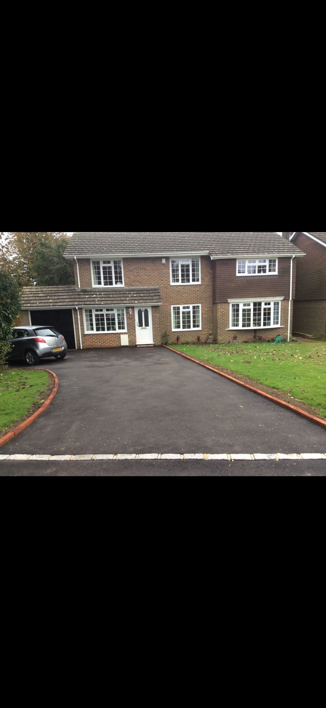
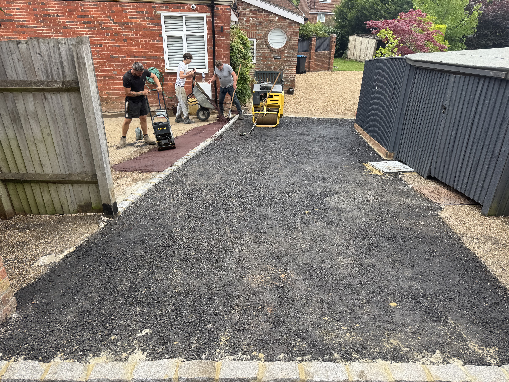
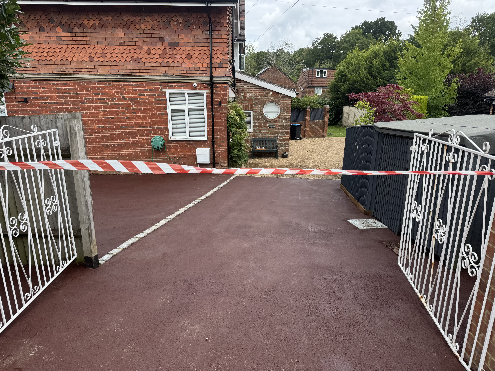
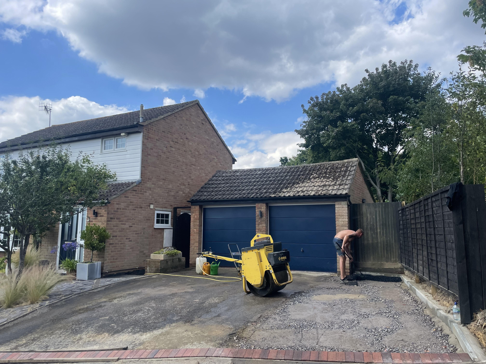
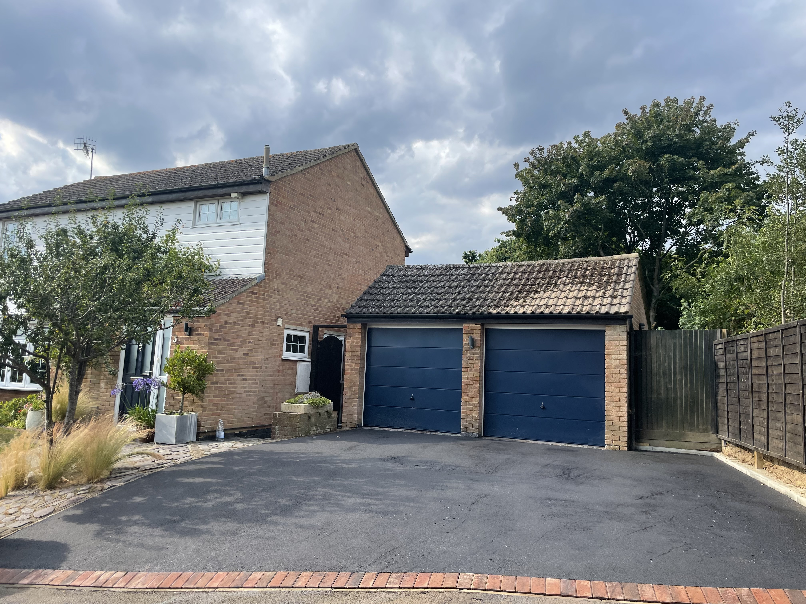

Tarmacing & Asphalt Surfacing
Penfolds Civils & Surfacing provides tarmacing and surfacing services for residential and commercial projects. Whether you need a driveway, access road or hardstanding area, contact us to discuss your requirements and request a quotation.
We focus on careful preparation, quality workmanship and a clean, practical finish suited to the intended use of each area.
Our Tarmacing Services
Tarmac Driveways
Driveway preparation and tarmac surfacing for domestic properties.
Access Roads
Tarmacing for access routes, private roads and entrances.
Commercial Surfacing
Surfacing for commercial yards, working areas and hardstandings.
Surface Preparation
Ground preparation and associated works ahead of laying a new surface.
Our Tarmacing Projects
Take a look at some of our driveway and surfacing work.









Areas We Cover
We work across East Sussex, West Sussex, Kent, Surrey and London, including Crowborough, Uckfield, Tunbridge Wells, Sevenoaks, East Grinstead, Haywards Heath, Heathfield and surrounding areas.
Request a Tarmacing Quote
Tell us about your project, where it is located and the type of surface you require. We can discuss your requirements and the next steps.